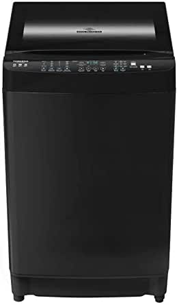
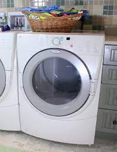

مركز صيانه هيتاشي
خدمات مركزهيتاشي
خدمه عملاء هيتاشي في مصر
اهلا بكم في الموقع الرسمي لخدمه هيتاشي بمصر وجميع المحغظات يسعدنا خدمتكم ديما علي مدار ال 24 ساعه
أسطول سيارات
أسطول من السيارات مجهز للوصول إليك في جميع انحاء محافظات مصر
قطع الغيار
قطع غيار أصلية 100% من بلد المنشأ متوفر جميع قطع الغيار الأصلية لجميع أجهزة هيتاشي. غسالات و ميني بار و ميكروويف و ثلاجات و ديب فريزر
صيانه جميع اجهزة هيتاشي
صيانه الثلاجات هيتاشي

يعد إصلاح الثلاجة المعطلة من أكثر المشاكل شيوعًا التي يواجهها الكثير من الأشخاص ، حيث تعتبر الثلاجة من أهم الأجهزة في المنزل ، لذا فإن أي عطل بها يمكن أن يؤدي إلى إتلاف العديد من الأشياء بداخلها. دعنا نخبرك بأهم الأشياء التي تميزنا عندما يتعلق الأمر بصيانة الثلاجة: ضمان تجاري نظرًا لخبرتنا في تحديد سبب تعطل المعدات والحفاظ على جودة المواد المستخدمة ، فإننا نقدم لعملائنا ضمانًا على جميع أعمال صيانة الثلاجات التي نقوم بها. المعدات المستعملة نحن متحمسون لتقديم أفضل خدمة إصلاح ممكنة ، لذلك نحن نواكب التطوير المستمر للمعدات ، ونفحص المعدات بسرعة قياسية للعثور على نقاط الخطأ.
اتصل بناصيانه الغسالات هيتاشي
يعد إصلاح الخلل في الغسالة من أكثر المشاكل شيوعًا التي يواجهها الكثير من الأشخاص ، حيث تعتبر الغسالة من أهم الأجهزة في المنزل ، وأي عطل وتجاهلها يمكن أن يؤدي إلى حدوث خلل ما يزيد من تكلفة الغسالة. دعنا نخبرك بأهم الأشياء التي تميزنا عندما يتعلق الأمر بصيانة الغسالة: ضمان تجاري نظرًا لخبرتنا في تحديد سبب تعطل المعدات والحفاظ على جودة المواد المستخدمة ، فإننا نقدم لعملائنا ضمانًا على جميع أعمال صيانة الغسالات التي نقوم بها. المعدات المستعملة نحن متحمسون لتقديم أفضل خدمة إصلاح ممكنة ، لذلك نتابع التطوير المستمر للمعدات ، وفحص المعدات وتحديد نقاط الفشل بسرعة قياسية.
اتصل بناصيانه ديب فريزير هيتاشي

لدينا لمهندسين علي اعلي مستوي للتعامل مع صيانة الديب فريزير والحفاظ على جودتها وتوفير الأداء الأكثر كفاءة. نحن فخورون بأن نقدم لك إصلاحات فورية في المنزل دون نقل المعدات تحت إشراف مهندسين محترفين ، ويسعدنا أيضًا أن نوفر لك أسطولًا يغطي جميع أنحاء الجمهورية لتلبية احتياجاتك على مدار 24 الساعة لتجنب الأعطال المفاجئة بسرعة .
اتصل بنا
صيانه ميني بار هيتاشي

تعتبر ثلاجة الميني بار من أهم المعدات التي يجب أن تتواجد في أي مكان عمل مثل مراكز التسوق أو الشركات الاستثمارية أو المكاتب التجارية الخاصة ، لأنها فريدة من نوعها من حيث أنها صغيرة الحجم ولا تشغل مساحة كبيرة ، لذا يمكنك استخدامها في جميع الاماكن يتم استخدامها في المؤسسات والمؤسسات التجارية. يجب أن يطيل عمرها ، خاصة وأن الشركة لديها فريق محترف من المهندسين والفنيين الذين تدور مهامهم حول استكشاف الأخطاء وإصلاحها ، حيث أن الهدف الرئيسي الذي تسعى الشركة إلى تحقيقه هو إرضاء جميع عملائها.
اتصل بنا
صيانه مجففات الملابس هيتاشي
تقدم مراكز خدمة المجفف إصلاحات داخل المزل واستبدال قطع غيار. بالإضافة إلى ذلك ، فإنه يضمن عمل المعدات بجودة عالية بفضل فحص المنزل مع المعدات المقدمة لهذا الغرض. ومع ذلك ، كما ذكرنا ، نقوم بتوريد معدات الأغراض الخاصة وكذلك قطع الغيار الأصلية ، بالإضافة إلى المتخصصين المدربين لتحقيق أعلى مستويات الجودة. تقدم خدمة التجفيف أيضًا ضمانات معتمدة تتراوح من ثلاثة أشهر إلى ثلاث سنوات للخدمة وإصلاح أعطال المجففات ومشكلاتها. ضمان مجفف في حالة حدوث عطل خلال فترة الضمان ، سيتم استبدال الأجزاء التالفة مجانًا دون أي تكلفة على العميل ، كما نضمن خلو جميع قطع الغيار من عيوب التصنيع وأخطاء التركيب.
اتصل بناصيانه الميكروويف هيتاشي

مرحبًا بكم في موقعنا المخصص لخدمات صيانة الميكروويف ، وهو الأول من نوعه في مصر ، حيث لا يوجد مركز صيانة ميكروويف يمكن أن ينافسنا ، ويتم إجراء الصيانة في منزل العميل ويتم تنفيذها بواسطة مهندسين وفنيين محترفين لديهم خيره كبير في الصيانه. اتصل بنا نصلك اينما كنت ، نقوم بإصلاح الميكروويف بأعلى كفاءة واحترافية عن طريق تركيب قطع غيار الميكروويف الأصلية بدلاً من الأجزاء التالفة ، مع تزويد العملاء بضمان فعال للإصلاحات في الميكروويف ، باستثناء مراكز إصلاح الميكروويف في مصر. بالإضافة إلى التنفيذ السريع لتقارير الأعطال ، سنستقبلك في نفس اليوم أو خلال 24 ساعة بعد إرسال الاتصال ، يرجى الاتصال على رقم الخطأ 01110949894 ، والذي من خلاله نقوم بالرد على مكالماتك على مدار 24 ساعة.
اتصل بنا